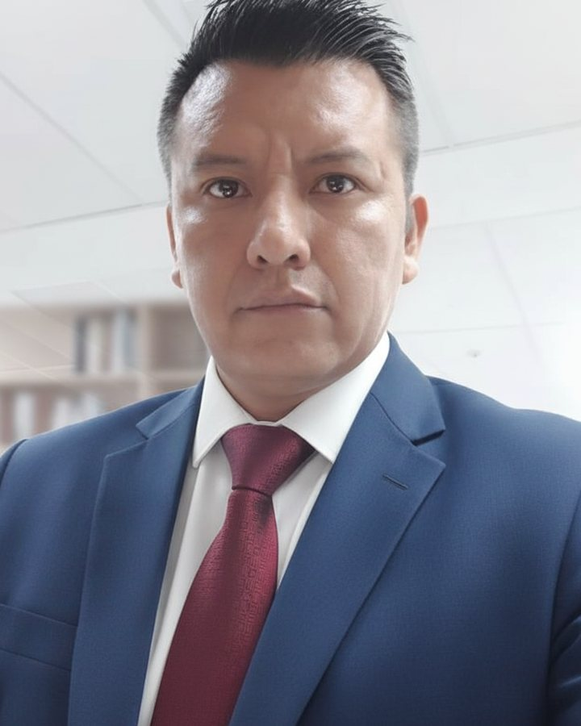
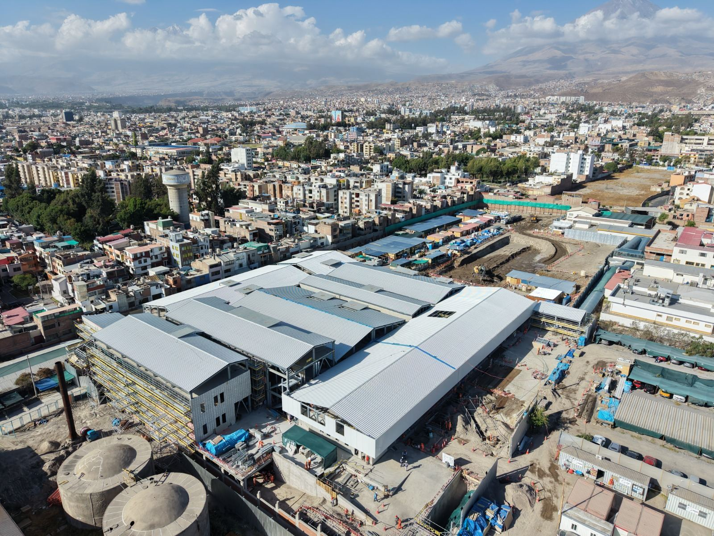
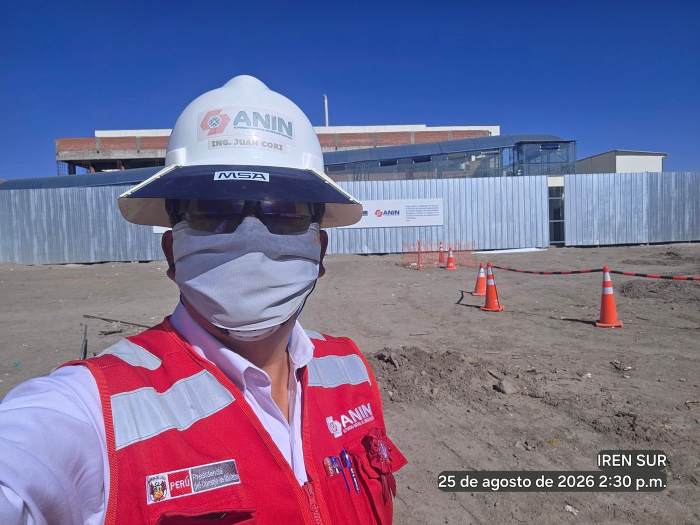
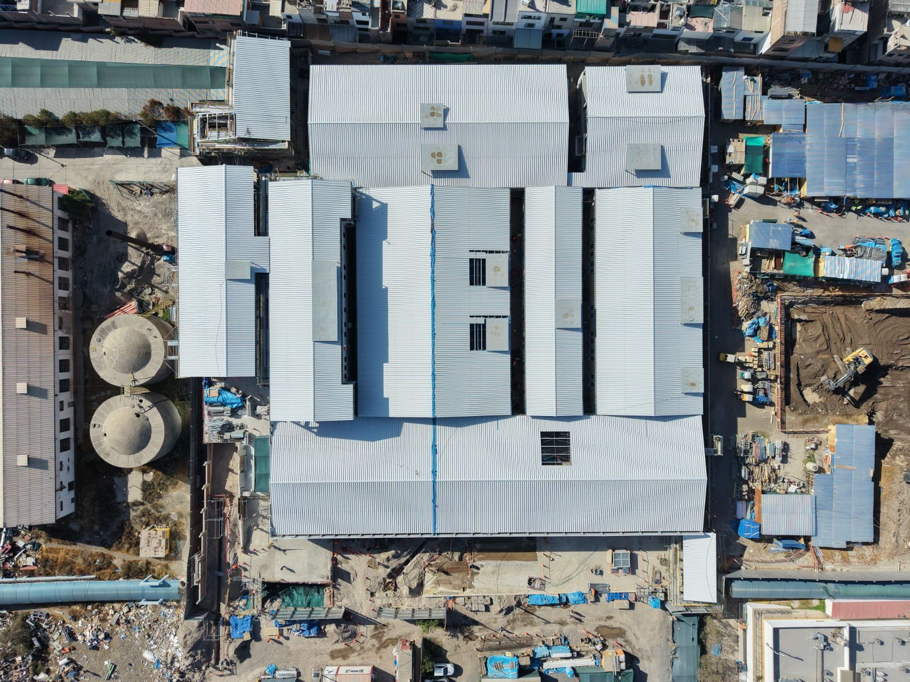

Calidad · SSOMA
Seguimiento y auditoría
Monitoreo de la gestión de calidad y de seguridad, salud ocupacional y medio ambiente. Auditor interno ISO 9001:2015 y OHSAS 18001.
Soy Juan Cori, ingeniero civil (CIP 91864) y magíster en Administración Estratégica de Empresas. Llevo más de veinte años entre obra, oficina técnica en gran minería y administración de contratos del Estado. Hoy hago seguimiento de calidad y SSOMA en infraestructura hospitalaria.

Mejoramiento y ampliación del Instituto Regional de Enfermedades Neoplásicas del Sur. Desde la ANIN hago el seguimiento y monitoreo de la gestión de calidad y SSOMA de la obra.



Tres frentes que he ejercido desde ambos lados de la mesa: como contratista y como entidad.
Monitoreo de la gestión de calidad y de seguridad, salud ocupacional y medio ambiente. Auditor interno ISO 9001:2015 y OHSAS 18001.
Valorizaciones, adelantos, ampliaciones de plazo, modificaciones y conformidades en obras públicas de salud, educación y riego. Entorno contractual NEC4 en ANIN.
Curva S, lookahead, control de horas-hombre, RFI, órdenes de cambio y cierre As Built bajo estándares de gran minería.
Dirección de obra civil y supervisión de campo electromecánica, con manejo de personal, procura y cumplimiento de costo y plazo.
Formulación de proyectos de inversión en infraestructura educativa e inspección técnica de seguridad en edificaciones (ITSE especializado).
Especialista en gestión y administración de proyectos con BIM. Docente universitario de Ingeniería Civil y Arquitectura.
Del campo a la oficina técnica, de la minería al Estado y del Estado al aula. Elige una etapa.
Una selección de proyectos con mi rol en cada uno. Filtra por sector.
Pequeñas aplicaciones para el trabajo diario. Funcionan en el navegador: los datos se guardan solo en su equipo y no se envían a ningún servidor.
Frecuencia, severidad y accidentabilidad a partir de accidentes, días perdidos y horas-hombre.
Abrir →Hallazgos, acciones correctivas, responsables y fechas de cierre, con alertas de vencimiento.
Abrir →Fechas límite de notificación y respuesta según los periodos del contrato.
Abrir →Lista de verificación por cláusula con porcentaje de conformidad y exportación.
Abrir →Evaluación de riesgos inicial y residual con cálculo automático del nivel.
Abrir →